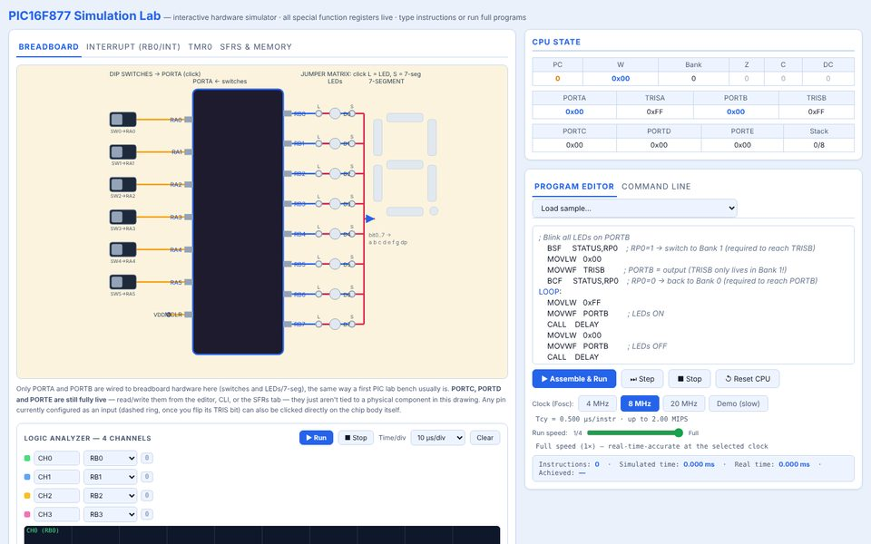
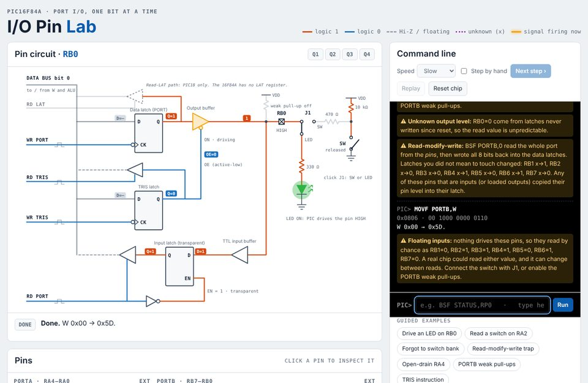
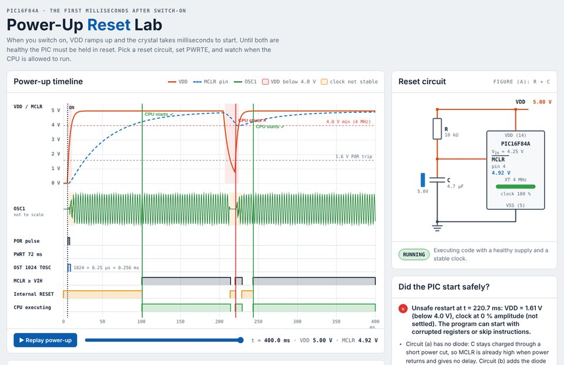

Course Description
This course introduces students to the fundamental concepts of embedded systems, focusing on the architecture, programming, and interfacing of microcontroller-based systems. Using PIC microcontrollers, students explore embedded hardware and software design, digital input/output, timers, interrupts, analog-to-digital conversion (ADC), pulse-width modulation (PWM), and serial communication. The course emphasizes practical applications through programming, simulation, and interfacing with sensors, actuators, and motors.
- LevelUndergraduate
- PlatformPIC 16F84A / 16F877A
- ToolsMPLAB, mikroC PRO
- DeliveryProject-based
Key Topics
- Microcontroller vs. microprocessor architecture and the PIC 8-bit family.
- Digital I/O, parallel ports, clocking, and switch/LED interfacing.
- Assembly and C (mikroC PRO) programming with MPLAB.
- Interrupts, timers, counters, and Capture/Compare/PWM modules.
- Analog-to-digital conversion and signal conditioning.
- Sensors, displays, keypads, and DC/stepper/servo motor drivers.
Topics Covered
| Ch. | Topic | Content |
|---|---|---|
| 1 | Introduction to Embedded Systems | Microcontroller vs. microprocessor architecture, semiconductor memory technologies (SRAM, ROM, Flash), computer organization, and 8-bit PIC microcontroller family overview. |
| 2 | PIC Mid-Range Family & 16F84A Architecture | Program and data memory structure, status registers, Special Function Registers (SFRs), banked RAM addressing, and configuration word settings. |
| 3 | Parallel Ports, Power Supply, & Clock Oscillators | Port A/B electrical characteristics, push-pull vs. open-drain outputs, switch/LED interfacing, pull-up resistors, and RC/crystal clock oscillators. |
| 4 | Starting to Program – Introduction to Assembler | Software development cycle, PIC 16 instruction set, MPLAB IDE, MPASM assembler, software simulation with MPSIM, and downloading code to hardware. |
| 5 | Building Assembler Programs | Flowcharts/state diagrams, conditional branching, subroutines, software delay generation, bitwise logical instructions, look-up tables (retlw/addwf PCL), macros, and mikroC PRO. |
| 6 | Interrupts, Counters, & Timers | Hardware interrupt processing (INTCON, ISR, context saving, critical regions), Timer 0 (TMR0) module, prescalers, hardware delay loops, and Sleep mode. |
| 7 | Larger Systems & PIC 16F873A/16F874A/16F877A | Program memory paging (PCLATH), expanded I/O ports (Ports A–E), peripheral allocation, and system testing/diagnostic tools (emulators, debuggers). |
| 8 | Human & Physical Interfaces | Matrix keypads, 7-segment display multiplexing, switch debouncing, sensors (optical, ultrasonic, Hall effect, temperature), and motor drivers (DC, H-bridge, stepper, servo). |
| 9 | Taking Timing Further | Advanced timing features including 16-bit Timer 1, 8-bit Timer 2 (with PR2 period register and postscalers), and Capture/Compare/PWM (CCP) hardware modules. |
| 11 | Data Acquisition & Manipulation | Analog-to-Digital Converters (ADC characteristics, step size, resolution), signal conditioning, voltage scaling/translation circuits, analog multiplexing, and comparators. |
Textbook
- Tim Wilmshurst, Designing Embedded Systems with PIC Microcontrollers: Principles and Applications, Newnes.
Video Lectures
Recorded lecture demonstrations, practical laboratory tutorials, and student videos showcasing their hardware–software embedded prototypes.
Open the playlist on YouTube Start with the first videoInteractive Simulation Labs
Browser-based PIC simulators: write assembly, run or single-step it, and watch the registers, breadboard LEDs, 7-segment display, timer and interrupts update live. The I/O Pin Lab zooms in on the hardware behind one port pin, and the Power-Up Reset Lab shows why the PIC must be held in reset at switch-on. Click a lab to open it in a new tab.
PIC16F84A Simulation Lab
The classic 18-pin PIC used throughout the course: PORTA/PORTB, TMR0, the RB0/INT interrupt and bank switching.
Open in a new tab ↗
40-pin · 4 banks · 8K×14 FlashPIC16F877 Simulation Lab
The larger 40-pin device with PORTA–PORTE, four register banks and a logic analyzer for tracing any pin.
Open in a new tab ↗
One port pin · Q1–Q4 · switch & LEDPIC16F84A I/O Pin Lab
Look inside a single port pin. Type an instruction and watch the data latch and TRIS latch get clocked, the tri-state buffers switch on and off, and the result reach a switch or an LED. Includes the bank-select, read-modify-write and open-drain RA4 traps.
Open in a new tab ↗
POR · PWRTE · OST · MCLR RCPIC16F84A Power-Up Reset Lab
Watch the first milliseconds after switch-on: VDD ramping up and the crystal starting. See how the internal POR, the 72 ms power-up timer, the oscillator start-up timer and the external R-C (with diode and Rs) on MCLR keep the PIC in reset until conditions are healthy.
Open in a new tab ↗Source code: Qaralleh-Esam/Embedded-Systems- on GitHub.
Course Materials
Slides are hosted on Google Drive and open in a new tab. Browse the whole folder, or pick a file below. Student project repositories are on GitHub.
Slides
- Chapter 1: Introduction to Embedded SystemsPPTX
- Chapter 2: PIC Mid-Range Family & 16F84A ArchitecturePPTX
- Chapter 3: Parallel Ports, Power Supply, & Clock OscillatorsPPTX
- Chapter 4: Starting to Program – Introduction to AssemblerPPTX
- Chapter 5: Building Assembler ProgramsPPTX
- Chapter 6: Interrupts, Counters, & TimersPPTX
- Chapter 7: Larger Systems & PIC 16F873A/16F874A/16F877APPTX
- Chapter 8: Human & Physical InterfacesPPTX
- Chapter 9: Taking Timing FurtherPPTX
- Chapter 11: Data Acquisition & ManipulationPPTX
Student Projects
- Fire Fighter RobotGITHUB
- Embedded Systems ProjectGITHUB
- Wearable Infant Positioning & MonitoringGITHUB
- Smart Home Automation SystemGITHUB
- Coffee Machine ControllerGITHUB
- Obstacle Removing RobotGITHUB
- Smart Room AutomationGITHUB
- Football Court Lighting & ScoreboardGITHUB
- Automated Card DealerGITHUB
- Embedded Project (Fall 2023)GITHUB
- POV Analog/Digital ClockGITHUB
- Embedded System ControllerGITHUB
- Embedded Hardware ProjectGITHUB
- Multi-Sensor Embedded SystemGITHUB
- PSUT Embedded Fire FightingGITHUB
- Embedded 3D ScannerGITHUB
- Smart Irrigation SystemGITHUB
- Mobile Automated Fire Fighting CarGITHUB
- Smart Home Embedded SystemGITHUB
- Secure Door Lock DesignGITHUB
- Smart Blind Stick DeviceGITHUB
- Missile Defence Target SystemGITHUB
- Automated Mop CleanerGITHUB
- Automated Car Braking System (ACBS)GITHUB
- Sumo PIC Warrior RobotGITHUB
- Smart Plant Pot SystemGITHUB
- Home Security SystemGITHUB
- Smart Gate Control SystemGITHUB
- PIC16F877A Fire AlarmGITHUB
- MOA Automated IrrigationGITHUB
- Smart Pill DispenserGITHUB
- Car Speed Tracking SystemGITHUB
- Pet Feeding MachineGITHUB
- PIC16F877A Mop CleanerGITHUB
- Digital Piggy BankGITHUB
- Smart Tank Level MonitorGITHUB
- Embedded BMI Health CalculatorGITHUB
- Microcontroller Vending MachineGITHUB
- Autonomous Pinball MachineGITHUB
- 4x4x4 LED Cube DisplayGITHUB
- Guard Car RobotGITHUB
- Sensored Bulldozer RobotGITHUB
- Microcontroller Elevator SystemGITHUB
- Embedded Line Following CarGITHUB
- Smart Traffic Light ControllerGITHUB
- GreenHouse IoT Control SystemGITHUB
- Interactive Laser Shooting GameGITHUB
- Smart Fire Alarm SystemGITHUB
- Embedded Crane MechanismGITHUB
- Robocar Embedded ControllerGITHUB
- GreenHouse Control SystemGITHUB
- Auto-Filling Liquid DispenserGITHUB
- 16F877A Vending MachineGITHUB
- Smart Air Conditioning SystemGITHUB